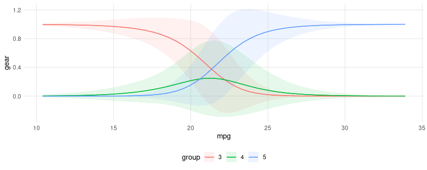
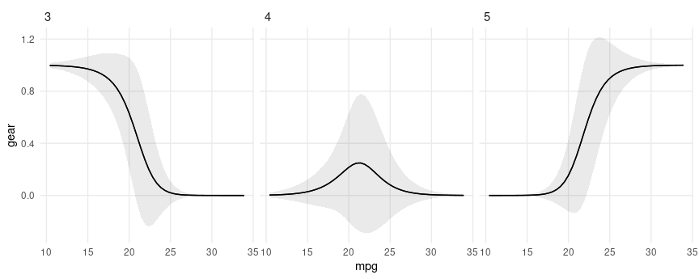
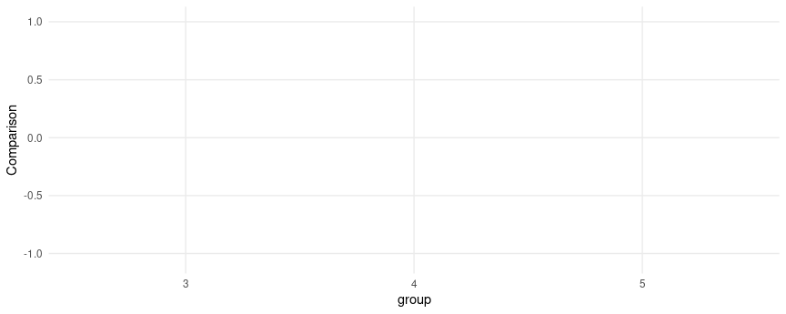

Categorical outcomes
Several packages in the R ecosystem allow users to estimate models for
ordered or discrete choice, such as ordered probit or multinomial logit.
This case study illustrates the use of marginaleffects with the
MASS, nnet, and mlogit packages.
We begin by loading two libraries:
MASS::polr function
Consider a simple ordered logit model in which we predict the number of gears of a car based its miles per gallon and horsepower:
Now, consider a car with 25 miles per gallon and 110 horsepower. The expected predicted probability for each outcome level (gear) for this car is:
predictions(mod, newdata = datagrid(mpg = 25, hp = 110))
#>
#> Group mpg hp Estimate Std. Error z Pr(>|z|) S 2.5 % 97.5 %
#> 3 25 110 0.203 0.0959 2.12 0.0339 4.9 0.0155 0.391
#> 4 25 110 0.578 0.1229 4.70 <0.001 18.6 0.3373 0.819
#> 5 25 110 0.218 0.1007 2.17 0.0302 5.1 0.0209 0.416
#>
#> Columns: rowid, group, estimate, std.error, statistic, p.value, s.value, conf.low, conf.high, gear, mpg, hp
#> Type: probs
Since the gear is categorical, we make one prediction for each level
of the outcome.
Now consider the marginal effects (aka slopes or partial derivatives) for the same car:
slopes(mod, variables = "mpg", newdata = datagrid(mpg = 25, hp = 110))
#>
#> Group Term mpg hp Estimate Std. Error z Pr(>|z|) S 2.5 % 97.5 %
#> 3 mpg 25 110 -0.06042 0.0169 -3.5812 <0.001 11.5 -0.09349 -0.0274
#> 4 mpg 25 110 -0.00318 0.0335 -0.0949 0.9244 0.1 -0.06891 0.0625
#> 5 mpg 25 110 0.06361 0.0301 2.1135 0.0346 4.9 0.00462 0.1226
#>
#> Columns: rowid, term, group, estimate, std.error, statistic, p.value, s.value, conf.low, conf.high, mpg, hp, predicted_lo, predicted_hi, predicted, gear
#> Type: probs
Again, marginaleffects produces one estimate of the slope for each
outcome level. For a small step size ε, the printed quantities are
estimated as:
$$\frac{P(gear=3|mpg=25+\varepsilon, hp=110)-P(gear=3|mpg=25-\varepsilon, hp=110)}{2 \cdot \varepsilon}$$ $$\frac{P(gear=4|mpg=25+\varepsilon, hp=110)-P(gear=4|mpg=25-\varepsilon, hp=110)}{2 \cdot \varepsilon}$$ $$\frac{P(gear=5|mpg=25+\varepsilon, hp=110)-P(gear=5|mpg=25-\varepsilon, hp=110)}{2 \cdot \varepsilon}$$
When we call avg_slopes(), marginaleffects will repeat the same
computation for every row of the original dataset, and then report the
average slope for each level of the outcome:
avg_slopes(mod)
#>
#> Group Term Estimate Std. Error z Pr(>|z|) S 2.5 % 97.5 %
#> 3 hp -0.00377 0.001514 -2.49 0.01285 6.3 -0.006735 -0.00080
#> 3 mpg -0.07014 0.015483 -4.53 < 0.001 17.4 -0.100485 -0.03979
#> 4 hp 0.00201 0.000958 2.10 0.03554 4.8 0.000136 0.00389
#> 4 mpg 0.03748 0.013860 2.70 0.00685 7.2 0.010311 0.06464
#> 5 hp 0.00175 0.000833 2.11 0.03518 4.8 0.000122 0.00339
#> 5 mpg 0.03266 0.009570 3.41 < 0.001 10.6 0.013905 0.05142
#>
#> Columns: term, group, estimate, std.error, statistic, p.value, s.value, conf.low, conf.high
#> Type: probs
nnet package
The multinom function of the nnet package allows users to fit
log-linear models via neural networks. The data used for this function
is a data frame with one observation per row, and the response variable
is coded a factor. All the marginaleffects package function work
seamlessly with this model. For example, we can estimate a model and
compute average marginal effects as follows:
library(nnet)
head(mtcars)
#> mpg cyl disp hp drat wt qsec vs am gear carb
#> Mazda RX4 21.0 6 160 110 3.90 2.620 16.46 0 1 4 4
#> Mazda RX4 Wag 21.0 6 160 110 3.90 2.875 17.02 0 1 4 4
#> Datsun 710 22.8 4 108 93 3.85 2.320 18.61 1 1 4 1
#> Hornet 4 Drive 21.4 6 258 110 3.08 3.215 19.44 1 0 3 1
#> Hornet Sportabout 18.7 8 360 175 3.15 3.440 17.02 0 0 3 2
#> Valiant 18.1 6 225 105 2.76 3.460 20.22 1 0 3 1
mod <- multinom(factor(gear) ~ hp + mpg, data = mtcars, trace = FALSE)
avg_slopes(mod, type = "probs")
#>
#> Group Term Estimate Std. Error z Pr(>|z|) S 2.5 % 97.5 %
#> 3 hp -3.36e-05 0.00225 -0.0149 0.98809 0.0 -0.00444 0.004372
#> 3 mpg -7.13e-02 0.02646 -2.6951 0.00704 7.2 -0.12315 -0.019448
#> 4 hp -4.67e-03 0.00221 -2.1126 0.03463 4.9 -0.00900 -0.000337
#> 4 mpg 1.59e-02 0.02010 0.7917 0.42851 1.2 -0.02348 0.055316
#> 5 hp 4.70e-03 0.00130 3.6170 < 0.001 11.7 0.00215 0.007247
#> 5 mpg 5.54e-02 0.01642 3.3732 < 0.001 10.4 0.02320 0.087563
#>
#> Columns: term, group, estimate, std.error, statistic, p.value, s.value, conf.low, conf.high
#> Type: probs
Notice that in such models, we get one marginal effect for each term,
for each level of the response variable. For this reason, we should use
"group" in the condition argument (or facet_*() function) when
calling one of the plotting functions:



mlogit package
The mlogit package uses data in a slightly different structure, with
one row per observation-choice combination. For example, this data on
choice of travel mode includes 4 rows per individual, one for each mode
of transportation:
library("AER")
library("mlogit")
library("tidyverse")
data("TravelMode", package = "AER")
head(TravelMode)
#> individual mode choice wait vcost travel gcost income size
#> 1 1 air no 69 59 100 70 35 1
#> 2 1 train no 34 31 372 71 35 1
#> 3 1 bus no 35 25 417 70 35 1
#> 4 1 car yes 0 10 180 30 35 1
#> 5 2 air no 64 58 68 68 30 2
#> 6 2 train no 44 31 354 84 30 2
mod <- mlogit(choice ~ wait + gcost | income + size, TravelMode)
avg_slopes(mod, variables = c("income", "size"))
#>
#> Group Term Estimate Std. Error z Pr(>|z|) S 2.5 % 97.5 %
#> air income 0.002786 0.00122 2.289 0.02209 5.5 0.000400 0.00517
#> air size -0.126477 0.02892 -4.373 < 0.001 16.3 -0.183162 -0.06979
#> bus income -0.000372 0.00110 -0.338 0.73557 0.4 -0.002531 0.00179
#> bus size 0.011349 0.02587 0.439 0.66084 0.6 -0.039347 0.06204
#> car income 0.003373 0.00137 2.455 0.01407 6.2 0.000681 0.00607
#> car size 0.045887 0.02476 1.853 0.06381 4.0 -0.002636 0.09441
#> train income -0.005787 0.00132 -4.390 < 0.001 16.4 -0.008371 -0.00320
#> train size 0.069241 0.02478 2.794 0.00521 7.6 0.020666 0.11782
#>
#> Columns: term, group, estimate, std.error, statistic, p.value, s.value, conf.low, conf.high
#> Type: response
Note that the slopes function will always return estimates of zero for
regressors before the vertical bar in the formula. This is because
marginaleffects increments all rows of the prediction dataset in the
same way to compute slopes and contrast. Because mlogit data are in
“long” format, this means that alternatives are incremented in the same
way, which does not produce alternative-specific changes in the
predictors.
One strategy to circumvent this problem is to supply a data frame of numeric values to compare, with alternative specific changes. In this example, we test what happens to the probability of selecting each mode of transportation if we only increase the wait time of air travel:
altspec <- data.frame(
low = TravelMode$wait,
high = ifelse(TravelMode$mode == "air", TravelMode$wait + 15, TravelMode$wait)
)
avg_comparisons(mod, variables = list(wait = altspec))
#>
#> Group Term Contrast Estimate Std. Error z Pr(>|z|) S 2.5 % 97.5 %
#> air wait manual -0.1321 0.01070 -12.35 <0.001 114.0 -0.1531 -0.1111
#> bus wait manual 0.0251 0.00460 5.45 <0.001 24.2 0.0160 0.0341
#> car wait manual 0.0701 0.00834 8.41 <0.001 54.5 0.0538 0.0865
#> train wait manual 0.0369 0.00528 6.99 <0.001 38.4 0.0266 0.0473
#>
#> Columns: term, group, contrast, estimate, std.error, statistic, p.value, s.value, conf.low, conf.high
#> Type: response
We can compute yet more kinds of marginal effects, we can construct
customized data frames and feed them to the newdata argument of the
slopes function.
If we want to compute the slope of the response function (marginal effects) when each of the predictors is fixed to its global mean, we can do:
nd <- TravelMode |>
summarize(across(c("wait", "gcost", "income", "size"),
function(x) rep(mean(x), 4)))
nd
#> wait gcost income size
#> 1 34.58929 110.8798 34.54762 1.742857
#> 2 34.58929 110.8798 34.54762 1.742857
#> 3 34.58929 110.8798 34.54762 1.742857
#> 4 34.58929 110.8798 34.54762 1.742857
avg_slopes(mod, newdata = nd, variables = c("income", "size"))
#>
#> Group Term Estimate Std. Error z Pr(>|z|) S 2.5 % 97.5 %
#> air income 6.66e-03 2.42e-03 2.75 0.00599 7.4 1.91e-03 1.14e-02
#> air size -1.69e-01 5.87e-02 -2.88 0.00393 8.0 -2.85e-01 -5.43e-02
#> bus income -1.14e-03 9.43e-04 -1.21 0.22630 2.1 -2.99e-03 7.07e-04
#> bus size 4.67e-02 2.72e-02 1.72 0.08622 3.5 -6.65e-03 1.00e-01
#> car income 6.48e-06 2.02e-05 0.32 0.74885 0.4 -3.32e-05 4.62e-05
#> car size 1.36e-03 8.81e-04 1.54 0.12304 3.0 -3.68e-04 3.08e-03
#> train income -5.52e-03 1.91e-03 -2.89 0.00384 8.0 -9.27e-03 -1.78e-03
#> train size 1.21e-01 4.44e-02 2.73 0.00634 7.3 3.42e-02 2.08e-01
#>
#> Columns: term, group, estimate, std.error, statistic, p.value, s.value, conf.low, conf.high
#> Type: response
If we want to compute marginal effects with the gcost and wait fixed
at their mean value, conditional on the choice of transportation mode:
nd <- TravelMode |>
group_by(mode) |>
summarize(across(c("wait", "gcost", "income", "size"), mean))
nd
#> # A tibble: 4 × 5
#> mode wait gcost income size
#> <fct> <dbl> <dbl> <dbl> <dbl>
#> 1 air 61.0 103. 34.5 1.74
#> 2 train 35.7 130. 34.5 1.74
#> 3 bus 41.7 115. 34.5 1.74
#> 4 car 0 95.4 34.5 1.74
avg_slopes(mod, newdata = nd, variables = c("income", "size"))
#>
#> Group Term Estimate Std. Error z Pr(>|z|) S 2.5 % 97.5 %
#> air income 0.006015 0.00233 2.587 0.00968 6.7 0.001458 0.01057
#> air size -0.232955 0.05661 -4.115 < 0.001 14.7 -0.343900 -0.12201
#> bus income -0.000713 0.00146 -0.489 0.62478 0.7 -0.003568 0.00214
#> bus size 0.020447 0.03436 0.595 0.55185 0.9 -0.046906 0.08780
#> car income 0.005445 0.00229 2.382 0.01724 5.9 0.000964 0.00993
#> car size 0.067839 0.04123 1.645 0.09991 3.3 -0.012974 0.14865
#> train income -0.010748 0.00256 -4.201 < 0.001 15.2 -0.015762 -0.00573
#> train size 0.144669 0.04773 3.031 0.00244 8.7 0.051127 0.23821
#>
#> Columns: term, group, estimate, std.error, statistic, p.value, s.value, conf.low, conf.high
#> Type: response
We can also explore more complex alternatives. Here, for example, only one alternative is affected by cost reduction:
nd <- datagrid(mode = TravelMode$mode, newdata = TravelMode)
nd <- lapply(1:4, function(i) mutate(nd, gcost = ifelse(1:4 == i, 30, gcost)))
nd <- bind_rows(nd)
nd
#> individual choice wait vcost travel gcost income size mode
#> 1 1 no 35 48 486 30 35 2 air
#> 2 1 no 35 48 486 111 35 2 train
#> 3 1 no 35 48 486 111 35 2 bus
#> 4 1 no 35 48 486 111 35 2 car
#> 5 1 no 35 48 486 111 35 2 air
#> 6 1 no 35 48 486 30 35 2 train
#> 7 1 no 35 48 486 111 35 2 bus
#> 8 1 no 35 48 486 111 35 2 car
#> 9 1 no 35 48 486 111 35 2 air
#> 10 1 no 35 48 486 111 35 2 train
#> 11 1 no 35 48 486 30 35 2 bus
#> 12 1 no 35 48 486 111 35 2 car
#> 13 1 no 35 48 486 111 35 2 air
#> 14 1 no 35 48 486 111 35 2 train
#> 15 1 no 35 48 486 111 35 2 bus
#> 16 1 no 35 48 486 30 35 2 car
avg_slopes(mod, newdata = nd, variables = c("income", "size"))
#>
#> Group Term Estimate Std. Error z Pr(>|z|) S 2.5 % 97.5 %
#> air income 8.24e-03 2.46e-03 3.352 <0.001 10.3 3.42e-03 0.013058
#> air size -2.12e-01 6.02e-02 -3.526 <0.001 11.2 -3.30e-01 -0.094353
#> bus income -1.33e-03 1.30e-03 -1.020 0.308 1.7 -3.88e-03 0.001223
#> bus size 6.06e-02 3.79e-02 1.600 0.110 3.2 -1.36e-02 0.134895
#> car income 2.66e-05 4.31e-05 0.617 0.537 0.9 -5.78e-05 0.000111
#> car size 2.38e-03 1.57e-03 1.512 0.131 2.9 -7.04e-04 0.005459
#> train income -6.94e-03 1.86e-03 -3.735 <0.001 12.4 -1.06e-02 -0.003298
#> train size 1.49e-01 4.28e-02 3.488 <0.001 11.0 6.55e-02 0.233374
#>
#> Columns: term, group, estimate, std.error, statistic, p.value, s.value, conf.low, conf.high
#> Type: response
Important: The newdata argument for mlogit models must be a
“balanced” data frame, that is, it must have a number of rows that is a
multiple of the number of choices.